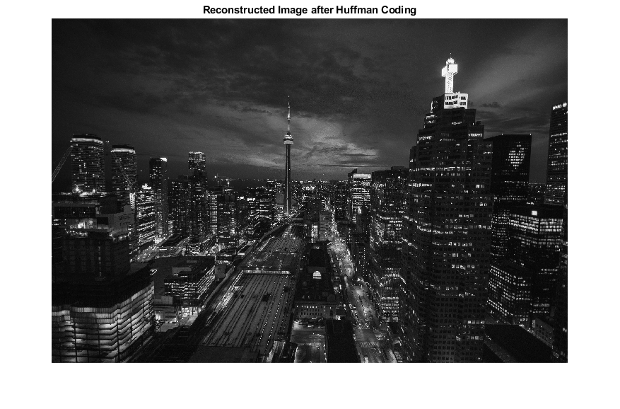

%------------------------------------------------------------ % Date : 26/01/2026 % Created by : Abhishek Kumar Jayswal % Experiment : Image Compression using Huffman Coding % Description : % This program performs lossless image compression on a % grayscale image using Huffman coding. The image is % encoded and decoded, and the compression ratio is % calculated. %------------------------------------------------------------ clc; % Clear command window clear; % Clear workspace variables close all; % Close all figure windows %------------------ Read and Display Original Image ------------------ % Read the color image from file rgb_img = imread('C:\Users\Abhishek\Desktop\DIP\Huffman_Coding\Original_Image.jpg'); figure; imshow(rgb_img); title('Original Color Image'); %------------------ Convert RGB Image to Grayscale ------------------ % Huffman coding is applied on grayscale images gray_img = rgb2gray(rgb_img); [rows, cols] = size(gray_img); % Image dimensions figure; imshow(gray_img); title('Grayscale Image'); %------------------ Prepare Image Data for Encoding ------------------ % Convert 2D grayscale image into a 1D column vector img_data = gray_img(:); %------------------ Probability Calculation ------------------ % Find unique pixel intensity values (0–255) pixel_values = unique(img_data); % Count occurrences of each pixel value pixel_count = histc(img_data, pixel_values); % Calculate probability of each pixel value pixel_prob = pixel_count / sum(pixel_count); %------------------ Huffman Dictionary Creation ------------------ % Generate Huffman dictionary using pixel values and probabilities huff_dict = huffmandict(pixel_values, pixel_prob); %------------------ Huffman Encoding ------------------ % Encode the grayscale image data into a binary bit stream encoded_stream = huffmanenco(img_data, huff_dict); %------------------ Huffman Decoding ------------------ % Decode the binary bit stream back to pixel values decoded_data = huffmandeco(encoded_stream, huff_dict); %------------------ Reconstruct the Image ------------------ % Convert decoded vector back to original image dimensions decoded_img = uint8(reshape(decoded_data, rows, cols)); figure; imshow(decoded_img); title('Reconstructed Image after Huffman Coding'); %------------------ Compression Analysis ------------------ % Calculate original image size (8 bits per pixel) original_bits = numel(img_data) * 8; % Calculate compressed image size (number of Huffman bits) compressed_bits = length(encoded_stream); % Calculate compression ratio compression_ratio = original_bits / compressed_bits; % Display compression results fprintf('Original Image Size (bits) : %d\n', original_bits); fprintf('Compressed Image Size (bits) : %d\n', compressed_bits); fprintf('Compression Ratio : %.2f\n', compression_ratio);
Original Image Size (bits) : 159694848 Compressed Image Size (bits) : 132978884 Compression Ratio : 1.20